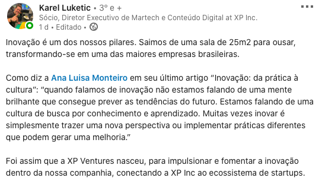

PORTFÓLIO
Post no LinkedIn para influenciador digital
XP INVESTIMENTOS
Setembro 2020 - Redatora

Vídeo silencioso da Campanha #nósestamosjuntas
COLETIVO JUNTAS
Maio 2020 - Voluntariado
Monitoramento durante as campanhas Ano Internacional da Enfermagem e Semana da Enfermagem
CONSELHO FEDERAL DE ENFERMAGEM
Post no FacebookMaio 2020 - SAC Redes Sociais
Workshop HTML e CSS
REPROGRAMA
Reprogramando com a MariMaio 2020 - Curso
Releitura de Estação Carandiru, de Drauzio Varella, estreia no DF
MONSTROS SA
Publicada no MetrópolesAgosto 2019 - Assessoria de Imprensa
Jornal Nosso Bairro
URBANIZADORA PARANOAZINHO
Boletim institucionalMarço/Abril 2017 - Publicação
Regularização dos condomínios Morada dos Nobres e Recanto Real
URBANIZADORA PARANOAZINHO
Conquista institucionalMaio 2016 - Cobertura de evento
Radar Saúde
MINISTÉRIO DA SAÚDE
Boletim institucionalJunho 2014 - Publicação
Ministro Chioro anuncia novo secretário de Gestão do Trabalho e da Educação na Saúde
MINISTÉRIO DA SAÚDE
Comunicação InternaAbril 2014 - Cobertura de evento
Arquivo Central: concluída etapa de transferência dos documentos do MJ
SECRETARIA DE DIREITOS HUMANOS DA PRESIDÊNCIA DA REPÚBLICA
Leia aquiMarço 2014 - Cobertura de evento
Rede Brasil Rural começa oficialmente nesta semana
SMC COMUNICAÇÃO
Leia aquiMarço 2012 - Site
Quem quer ser pesquisador?
SMC COMUNICAÇÃO
Março 2012 - ProduçãoMDA e SDH firmam acordo para enfrentar trabalho escravo
EBC - RÁDIO NACIONAL
Novembro 2011 - ReportagemMarcha das Margaridas quer igualdade de gênero
EBC - RÁDIO NACIONAL
Agosto 2011 - ReportagemInovação é ideia; patente é propriedade
FUNDAÇÃO UNIVERSIDADE DE BRASÍLIA
Revista Darcy 03Novembro/Dezembro 2009 - Reportagem
Com a palavra, a velha das latas
FUNDAÇÃO UNIVERSIDADE DE BRASÍLIA
Revista Darcy 02Setembro 2009 - Reportagem
Especialistas comentam superação de Cesar Cielo
FUNDAÇÃO UNIVERSIDADE DE BRASÍLIA
Leia aquiAbril 2009 - Site